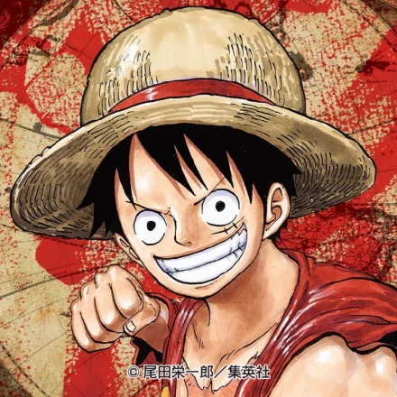
1. Monkey D. Luffy
Captain of the Straw Hat Pirates, nicknamed the Straw Hat Luffy. From the East Blue, the reward is 3 billion berri.
The founder of the Straw Hat Pirates was one of 11 supernovae to land on the Chambordi Islands in what is known as
the "Worst of Ages". In the event of "The Country of Harmony", Kaido, one of the "beasts" of the original "Four emperors",
was defeated and replaced as the new "Four Emperors". It is a rubber man who has eaten the rubber fruit. Dream of becoming
"King of the Pirates" and sail on the sea with this goal.
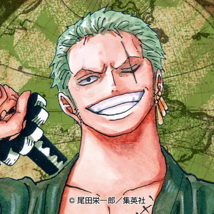
2. Roronoa Zoro
A member of the "Straw Hat Crew", nicknamed the "thief hunter". From the East Sea, the reward is 1.11 billion bergs.
The first member of the Straw Hat Crew, along with Captain Luffy, was one of the eleven supernovae to land on the Chambordi Islands
in what became known as the "Worst of Ages". He is a swordsman who fights with three swords. He dreams of becoming the "world's greatest
swordsman" and sails on the sea with this goal.
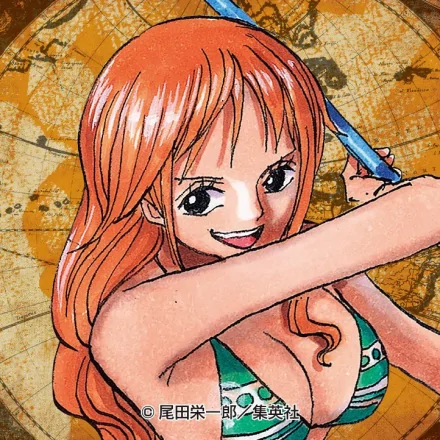
3. Nami
"Straw Hat Crew" navigator, nicknamed "little thief cat". From the East Sea, the reward is 366 million berri. Use weather sticks and weather science to fight. The second member of the Straw Hat Crew to join. The dream is to draw a map of the whole world and sail on the sea with this goal.

4. Usopp
"Straw Hat Crew" navigator, nicknamed "little thief cat". From the East Sea, the reward is 366 million berri. Use weather sticks and weather science to fight. The second member of the Straw Hat Crew to join. The dream is to draw a map of the whole world and sail on the sea with this goal.
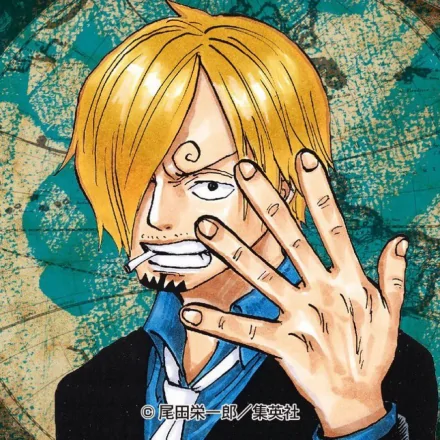
5. Sanji
The cook of the Straw Hats, nicknamed "Blackfoot". From Beihai, the reward is 1.032 billion berri. Fight with a kick and a Germa suit. The fourth member of the Straw Hat Crew to join. Dream of "finding the legendary sea All Blue" and sail on the sea with this goal.
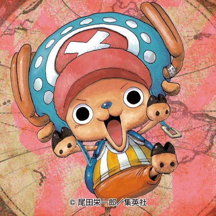
6. Tony Tony Chopper
The ship's doctor of the Straw Hat Crew, nicknamed "Jabbar the marshmallow". A great navigator. 1,000 berri. It's the reindeer that eats everybody's fruit. The fifth member of the Straw Hat Crew. Dream of "becoming a panacea" and sail on the sea with this goal.
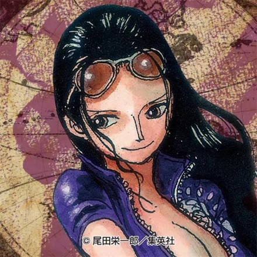
7. Nico Robin
Archaeologist of the Straw Hat Crew, nicknamed the "Sons of the Devil". From Sohae, the reward is 930 million berri. The ability to eat the flower fruit. The sixth member of the Straw Hat Crew to join. He dreams of finding a blank 100 years of history and sailing on the sea with this goal.
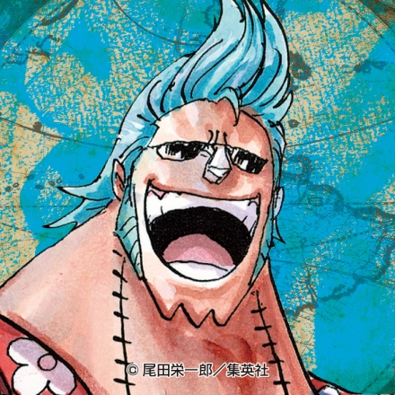
8. Franky
The boatbuilder of the Straw Hat Crew, nicknamed "Iron Man French". South Sea origin. 394 million berri. Fight with modified bodies and homemade weapons. The seventh member of the Straw Hat Crew to join. Dream of sailing on the sea with the goal of "sailing around the great voyage in a boat of dreams made by oneself".
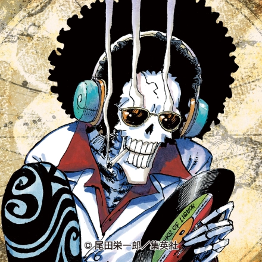
9. Brook
Musician of the Straw Hat Crew, nicknamed "Nasal Song Brook" and "The King of Soul". From Sohae, the reward is 383 million berri. The power of eating the fruit of the yellow spring. A swordsman who fights with a Western sword will use the ability of the Yellow Spring Fruit as an aid in battle. The eighth member of the Straw Hat Crew to join. The dream of "meeting with Rab, realizing the agreement with Rab", and sailing on the sea as a goal.
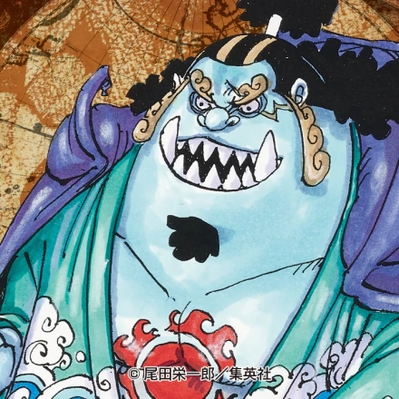
10. Jimbei
Helmsman of the Straw Hat Crew, nicknamed "Sea Man Very flat". Born in the Dragon Palace Kingdom, the reward is 1.1 billion berri. The whale Sharkfish of the Ichthyoid race fight using Ichthyoid karate and Ichthyoid judo. The ninth member of the "Straw Hat Crew" to join, one of the original seven military seas. Dream to "help Luffy become One Piece King, witness the fish people and mermaid people to get real freedom", as the goal of sailing on the sea.
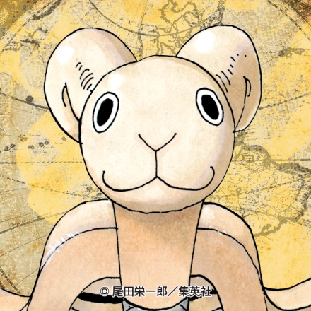
11. Meli
The Meli, designed by Meli, a butler in the village of West Bro in the East Sea, was the first official pirate ship of the Straw Hat Crew. From the village of West Bro in the East Sea to the Island of Justice on the Great Sea Route, he accompanied the Straw Hat Crew on a long adventure. Due to the deep feelings of the straw hat group to Meli, the spirit of the ship was born in the Meli, in the seven water capital once dragged the damaged ship body to the island of justice to save the straw hat group, and finally overwhelmed, the hull collapsed, the straw hat group carried out a sea burial, and the Meli wave goodbye.
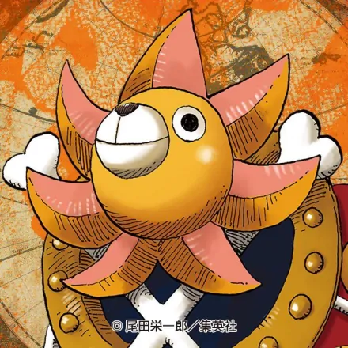
12. Sunny
A priates' boat designed by the Straw Hat crew's boatbuilder, Frankie, with the help of the Carrera Company.